Oil geopolitical risk: off the March peak, still high. Iacoviello's oil-related AI-GPR read 752 in September, below the March 2026 record of 1,844 but above the 2003 Iraq-war (515) and 2022 Ukraine (736) readings. Source: https://www.matteoiacoviello.com/ai_gpr.html
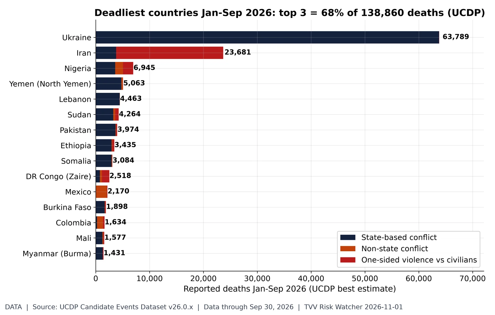
The deadliest conflict zones of 2026. UCDP candidate events Jan-Sep 2026: 138,860 deaths worldwide; Ukraine 63,789, Iran 23,681, Nigeria 6,945, Yemen (North Yemen) 5,063, Lebanon 4,463. Largest one-sided (civilian-targeted) toll: Iran 19,901. UCDP codes organized violence (state, non-state, one-sided), which includes but is not limited to terrorism; candidate data are preliminary and revised monthly. Source: https://ucdp.uu.se/downloads/
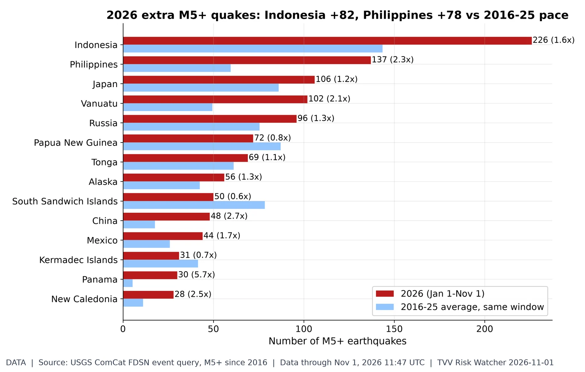
Which regions are shaking more?. USGS ComCat M5+ through 11:47 UTC Nov 1: 1,722 in 2026 vs a 2016-25 average of 1,444 for the same Jan 1-Nov 1 window. Busiest: Indonesia 226 (avg 143.5), Philippines 137 (avg 59.5), Japan 106 (avg 86.1), Vanuatu 102 (avg 49.4). Biggest excess vs normal (regions averaging 5+): Panama 5.7x, China 2.7x, Balleny Islands 2.6x. Regions are USGS place-name tails (country or named region), so offshore zones may split. Source: https://earthquake.usgs.gov/fdsnws/event/1/query?format=csv&starttime=2016-01-01&minmagnitude=5&orderby=time-asc&limit=20000&eventtype=earthquake
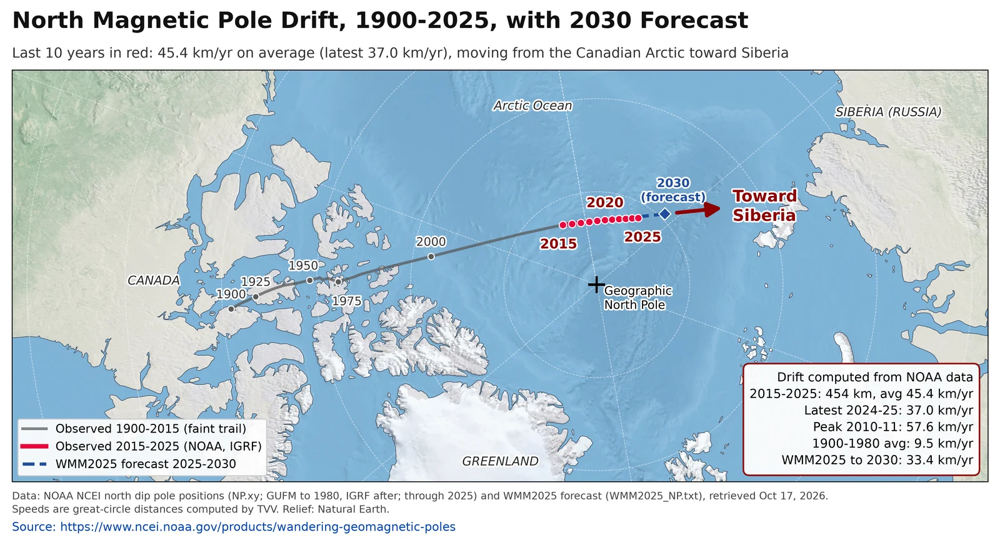
North magnetic pole drift (measured). The north magnetic pole moved 454 km in 2015-2025 (45.4 km/yr average; 37.0 km/yr in 2024-25, down from a 57.6 km/yr peak in 2010-11) as it heads from the Canadian Arctic toward Siberia; NOAA's WMM2025 forecasts about 33 km/yr to 2030. Weekly standard chart; data held at 2025 (annual NOAA series). Source: https://www.ncei.noaa.gov/products/wandering-geomagnetic-poles
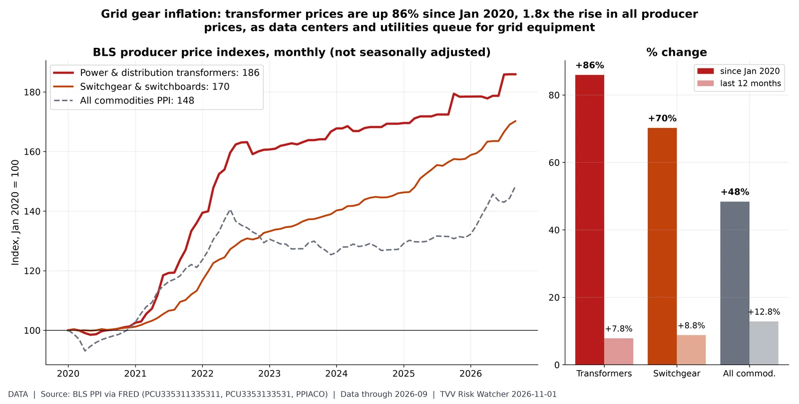
Transformer prices: the grid bottleneck. BLS PPI, power/distribution/specialty transformer manufacturing (FRED PCU335311335311) 185.9 in Sep 2026 (Jan 2020 = 100; +7.8% y/y); switchgear and switchboard apparatus 170.2 (+8.8% y/y); all-commodities PPI 148.4 (+12.8% y/y). Transformers and switchgear gate new data-center and utility hookups; since 2020 they have risen far faster than producer prices overall, a sign of a supply bottleneck, although in the last 12 months the oil shock lifted the all-commodities index faster. September data. Data-center series. Source: https://fred.stlouisfed.org/series/PCU335311335311Permanent-type job losses rising. BLS CPS (FRED LNS13026638) unemployed job losers not on temporary layoff 1.750M in Sep 2026, up 50% from 1.170M in Sep 2022; 2019 average 1.34M; highest since Nov 2021 outside the COVID spike. Permanent job losers 0.605M (LNS13026637); on temporary layoff (expecting recall) 0.845M (LNS13023653). No-recall job loss is the layoff type tied to restructuring, including AI-linked cuts; temporary layoffs expect recall. Jobs/Labor series. Source: https://fred.stlouisfed.org/series/LNS13026638
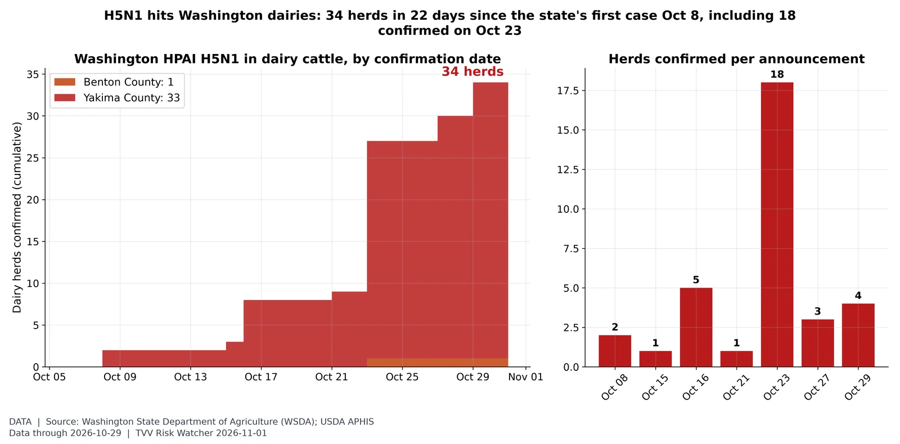
Washington bird flu in dairy herds. Washington State Dept. of Agriculture table of HPAI H5N1 in cattle: 34 dairy herds confirmed Oct 8-29 (Benton 1, Yakima 33); largest batch 18 herds on Oct 23. USDA APHIS called the Oct 8 Yakima cases Washington's first HPAI in livestock; WSDA reports sequencing shows the cow-adapted B3.13 strain, with no evidence of mammalian adaptation or human-to-human spread. Hong Kong CHP's Avian Influenza Report (wk 42) lists a US human H5N1 case reported by Washington State DOH on Oct 15. SV.2.4 check Nov 1: WHO (Oct 7 interface report), CHP wk 42, Taiwan CDC (poultry H5N1 only, latest Oct 27) and China (last H5N6 case Apr 16) show no new Asian human H5N1 cluster, so no separate SV.2.4 chart. Source: https://agr.wa.gov/departments/animals-livestock-and-pets/avian-health/avian-influenza/hpai-(h5n1)-in-cattle-producer-resources
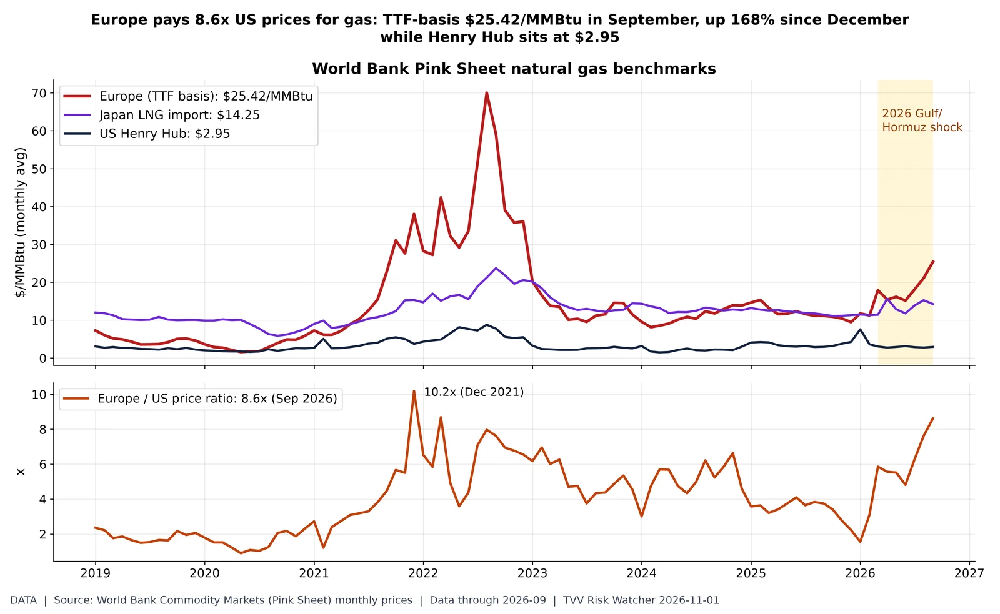
Gas: Europe vs America. World Bank Pink Sheet monthly averages, Sep 2026: natural gas Europe $25.42/MMBtu (Dec 2025 $9.48), Japan LNG $14.25, US Henry Hub $2.95; Europe/US ratio 8.6x, highest since Mar 2022 (2022 crisis peak 10.2x in Dec 2021). Brent averaged $116.8/bbl in September. Gulf LNG (Qatar) ships through Hormuz, so Europe and Asia carry the supply risk; the US is insulated by domestic gas. Commodities beyond metals for desk 8; October data due early November. Source: https://www.worldbank.org/en/research/commodity-markets
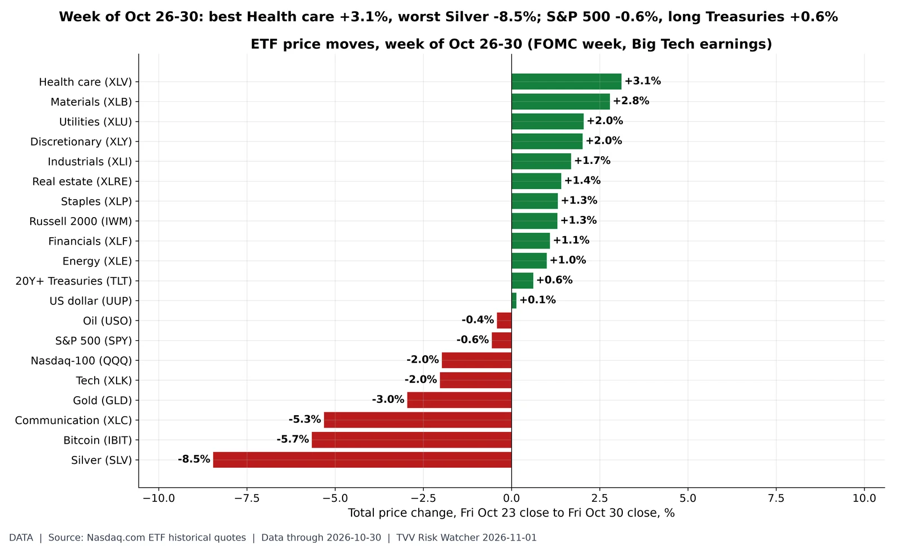
The week on the tape. Weekly price change Fri Oct 23 to Fri Oct 30 close (Nasdaq.com ETF history): Health care +3.1%; Materials +2.8%; Utilities +2.0%; Discretionary +2.0%; Industrials +1.7%; Real estate +1.4%; Staples +1.3%; Russell 2000 +1.3%; Financials +1.1%; Energy +1.0%; 20Y+ Treasuries +0.6%; US dollar +0.1%; Oil -0.4%; S&P 500 -0.6%; Nasdaq-100 -2.0%; Tech -2.0%; Gold -3.0%; Communication -5.3%; Bitcoin -5.7%; Silver -8.5%. Week included the Oct 28 FOMC decision and Big Tech Q3 reports; Apple reports Nov 2, midterms Nov 3. ETF prices exclude dividends. Source: https://www.nasdaq.com/market-activity/etf/spy/historical
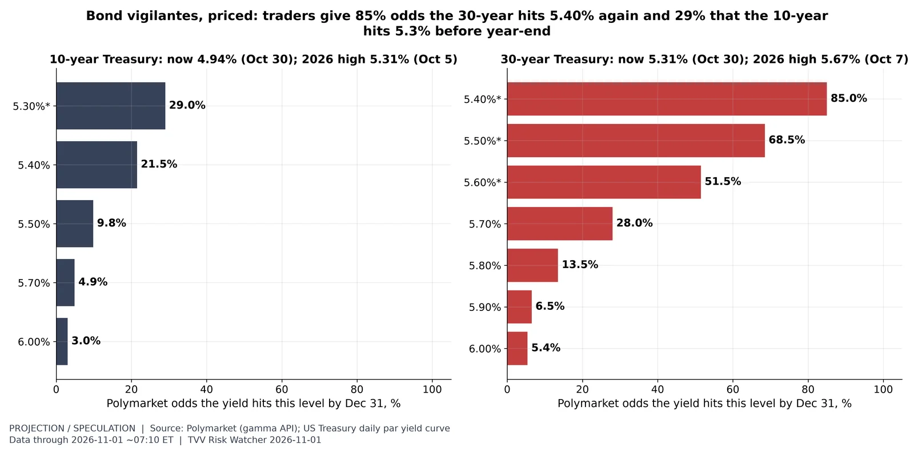
How high can yields go by year-end?. Polymarket (~7:10 AM ET Nov 1), open 'hit by Dec 31' strikes: 10-year 5.3% 29.0%, 5.4% 21.5%, 5.5% 9.8%, 5.7% 4.9%, 6.0% 3.0%; 30-year 5.40% 85.0%, 5.50% 68.5%, 5.60% 51.5%, 5.70% 28.0%, 5.80% 13.5%, 5.90% 6.5%, 6.00% 5.4%. Treasury par yields Oct 30: 10Y 4.94%, 30Y 5.31%; 2026 daily highs 10Y 5.31% (Oct 5), 30Y 5.67% (Oct 7). Strikes marked * were re-listed Oct 23 and count only from then (original strikes up to 10Y 5.3% and 30Y 5.65% already resolved Yes; since Oct 23 the highs are 10Y 5.05%, 30Y 5.37%). Event volume $1.1M (10Y) and $0.28M (30Y). Market odds are crowd prices, not forecasts. Source: https://polymarket.com/event/how-high-will-10-year-treasury-yield-go-before-2027
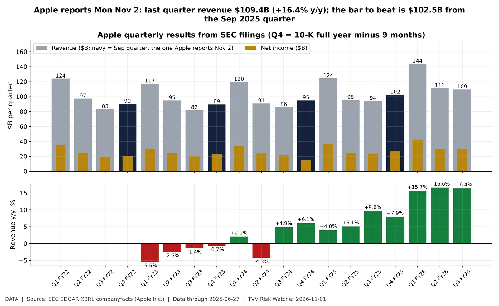
Apple into its Nov 2 report. Apple 10-Q/10-K XBRL (SEC companyfacts): June-quarter 2026 (Q3 FY26, ended Jun 27) revenue $109.4B (+16.4% y/y), net income $29.8B. Fiscal 2026 to date (3 quarters) $364.4B vs $314.6B a year earlier (+15.8%). Sep 2025 quarter (Q4 FY25, derived) revenue $102.5B, net income $27.5B. Apple reports the Sep quarter (Q4 FY26) Mon Nov 2 after the close. Source: https://www.sec.gov/cgi-bin/browse-edgar?action=getcompany&CIK=0000320193&type=10-Q
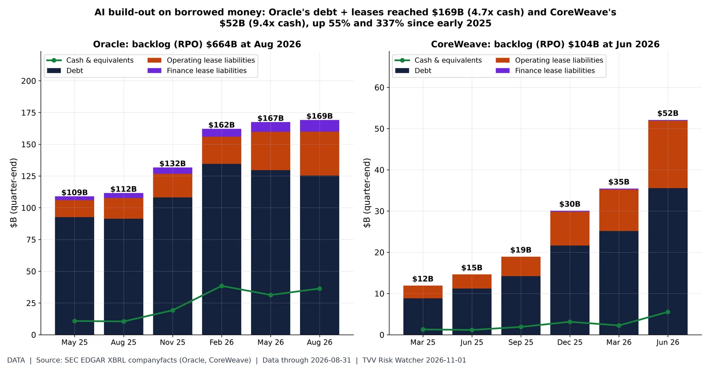
Oracle and CoreWeave: the AI debt stack. SEC XBRL quarter-end balances. Oracle (Aug 31, 2026, Q1 FY27 10-Q): notes and loans $125.3B, operating leases $34.6B, finance leases $9.2B, cash $36.4B, remaining performance obligations $664B. CoreWeave (Jun 30, 2026, Q2 10-Q): debt carrying amount $35.6B, operating leases $16.3B, cash $5.5B, RPO $103.7B. Totals rose from $109B and $12B at May 2025/Mar 2025. Backlog is contracted revenue, not cash; signed-but-not-commenced leases are excluded. Data-center financing series. Source: https://www.sec.gov/cgi-bin/browse-edgar?action=getcompany&CIK=0001341439&type=10-QSoftware jobs still far below 2020. Indeed Hiring Lab (FRED IHLIDXUSTPSOFTDEVE, IHLIDXUS), Oct 23: software development postings index 80.8 (Feb 1, 2020 = 100; +23.8% y/y), down 65% from 233.8 on Feb 28, 2022; all postings 103.7 (+3.1% y/y). The gap is consistent with AI coding tools plus post-2022 tech cutbacks, though the past year shows a partial rebound; postings measure hiring demand, not layoffs. Jobs/Labor series. Source: https://fred.stlouisfed.org/series/IHLIDXUSTPSOFTDEVE
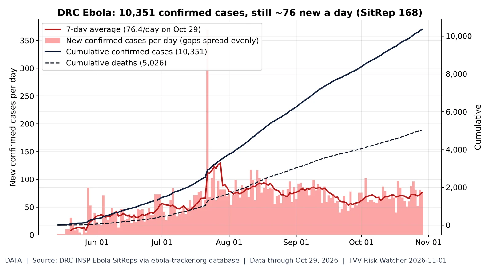
Ebola outbreak not slowing. INSP SitRep 168 (situation Oct 29): 10,351 confirmed cases and 5,026 deaths (48.6% of confirmed cases) since the first bulletin May 14; 7-day average 76.4 new cases/day (peak 129.4 around Jul 28). Top provinces: Ituri 7,346, Nord-Kivu 2,436, Haut-Uélé 453. Daily values where bulletins skip days are spread evenly; data are as transcribed by ebola-tracker.org from INSP PDFs. Source: https://ebola-tracker.org/en/database/
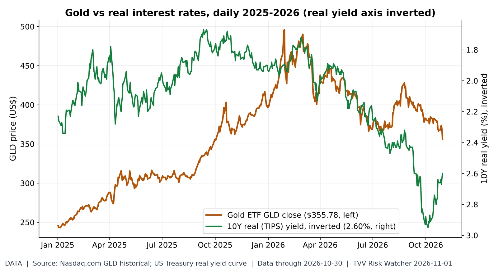
Gold vs real rates. GLD closed at $355.78 on Oct 30, 28.3% below its Jan 29, 2026 high of $495.90; the 10Y real yield is 2.60%. 2026 daily correlation of GLD returns with real-yield changes: -0.25. Source: https://www.nasdaq.com/market-activity/etf/gld/historical
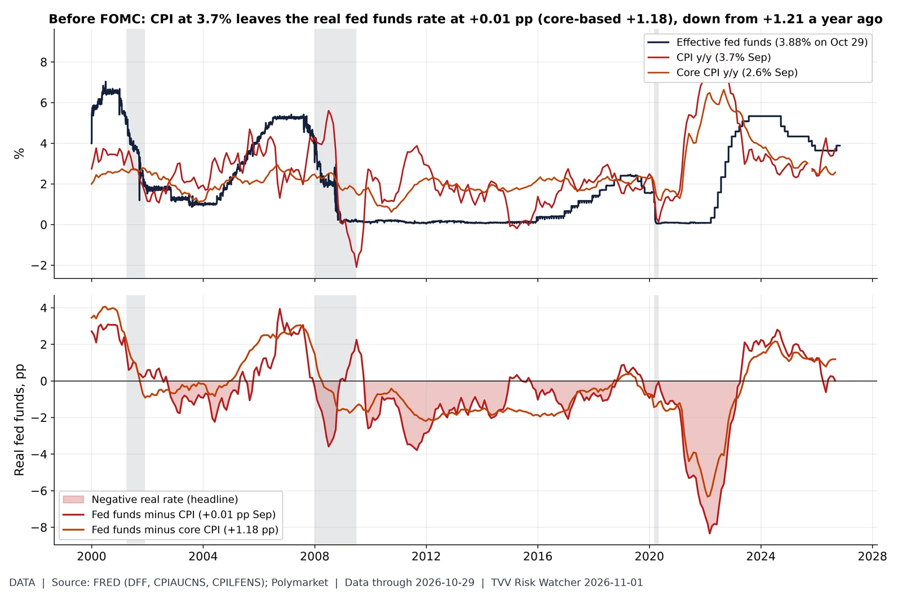
How tight is the Fed, really?. Effective fed funds 3.88% (Oct 29) vs CPI 3.7% y/y in September: the real rate on headline CPI is +0.01 pp (core-based +1.18 pp, core 2.6%). A year ago (Sep 2025) it was +1.21 pp. Monthly average fed funds minus y/y CPI (not seasonally adjusted). Source: https://fred.stlouisfed.org/series/DFF
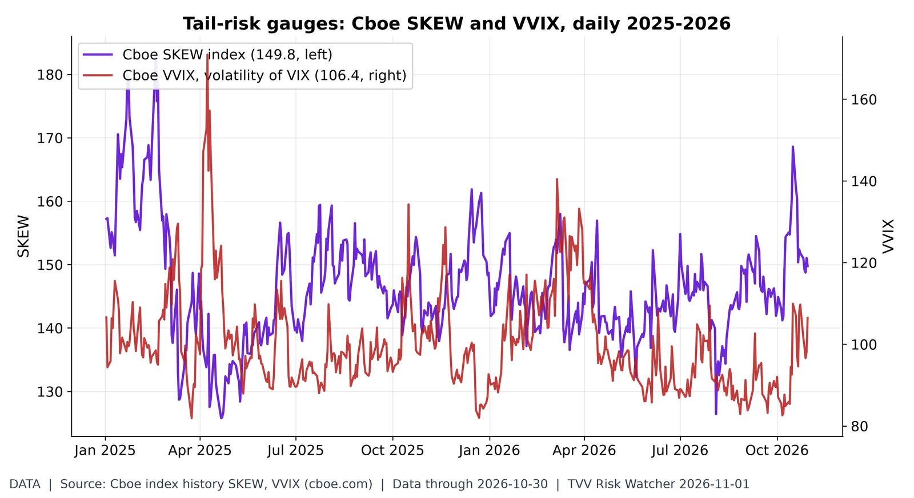
Is anyone paying for crash protection?. On Oct 30 SKEW closed at 149.8 (2026 range 126.4-168.6) and VVIX at 106.4 (2026 high 140.4 on Mar 6). Higher SKEW = costlier far-out-of-the-money S&P puts. Source: https://www.cboe.com/us/indices/dashboard/skew/
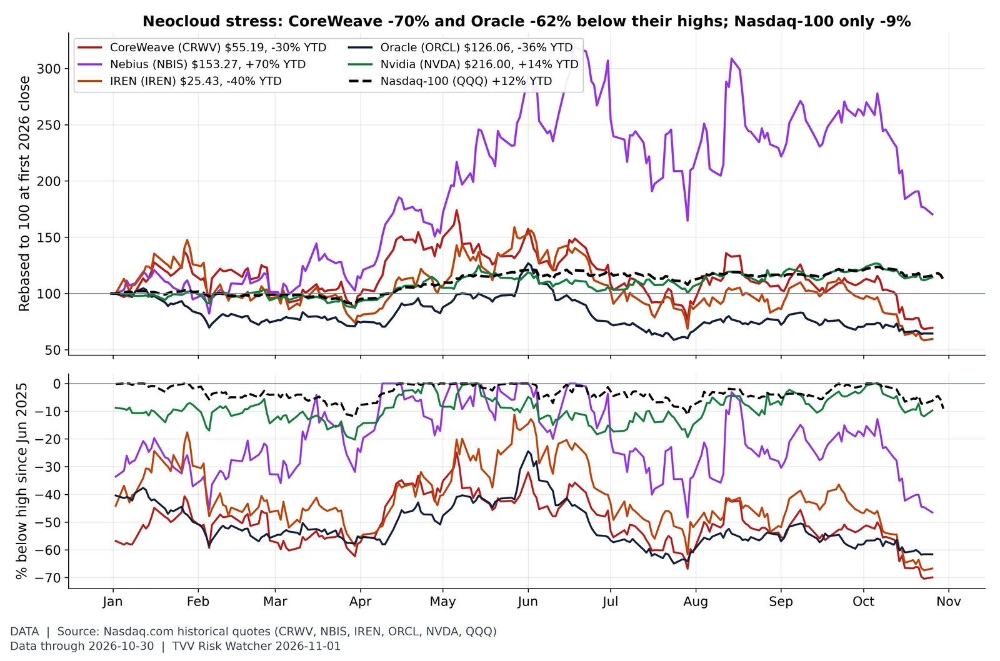
Neocloud stocks vs the index. Closes Fri Oct 30: CoreWeave $55.19, -70% below its Jun 20, 2025 high of $183.58; Oracle $126.06, -62% below $328.33 (Sep 10, 2025); Nebius -47%, IREN -67%, Nvidia -10% off highs (since Jun 2025), vs Nasdaq-100 -9.1%. The most debt-funded AI builders trade furthest below their peaks; CoreWeave's CDS is above 1,000bp per the TVV DC workbook. Microsoft, Alphabet, Amazon and Meta have reported Q3; CoreWeave and Nebius report in November. Source: https://www.nasdaq.com/market-activity/stocks/crwv/historical
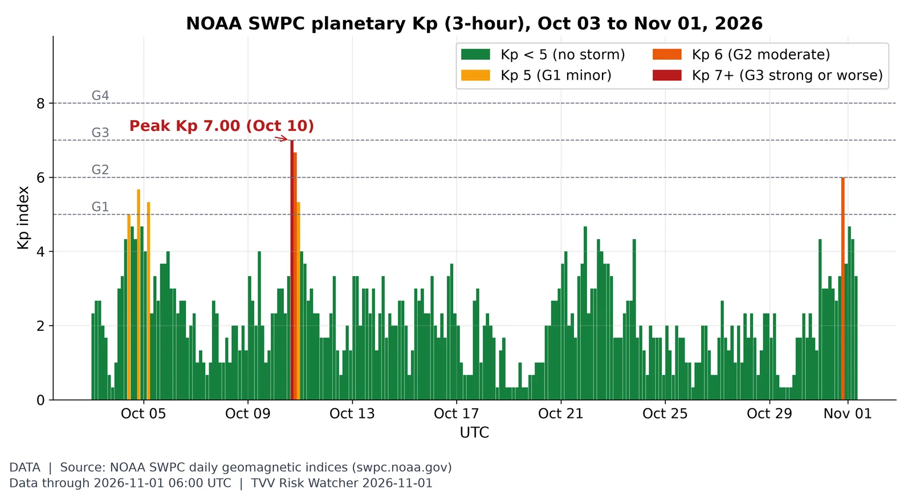
Geomagnetic activity, last 30 days. Kp peaked at 7.00 on Oct 10 in this 30-day window; since Oct 31 00 UTC it maxed at Kp 6.00, and NOAA's latest 3-day forecast (issued 2026 Nov 01 0030 UTC) has a peak Kp 4.67 (NOAA Scale G1) on Nov 01. Source: https://www.swpc.noaa.gov/products/planetary-k-index
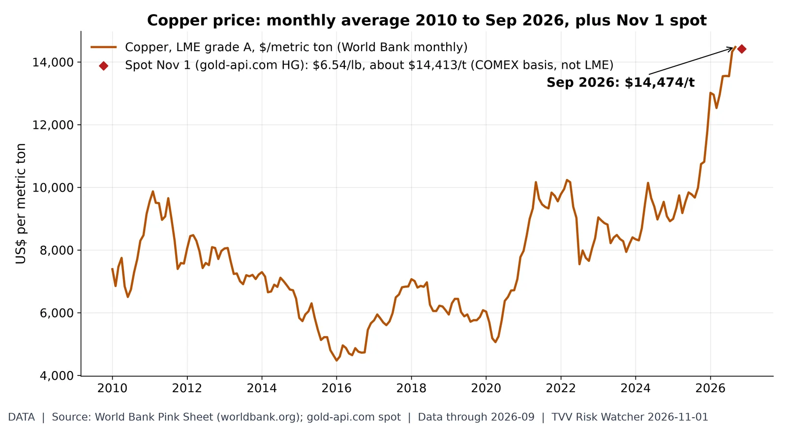
Copper near the top of its range. Copper averaged $14,474/t in September (a 2010-26 monthly record); the Nov 1 COMEX-basis spot quote is $6.54/lb (about $14,413/t). Source: https://www.worldbank.org/en/research/commodity-markets